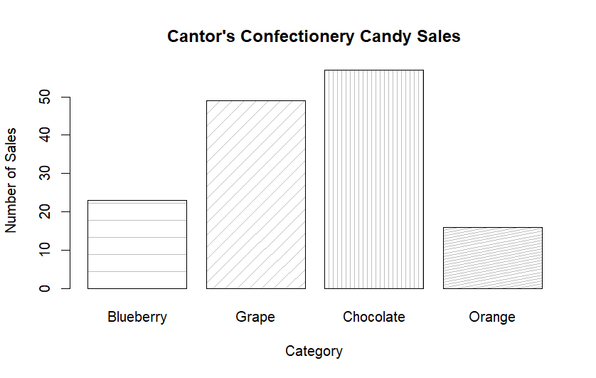
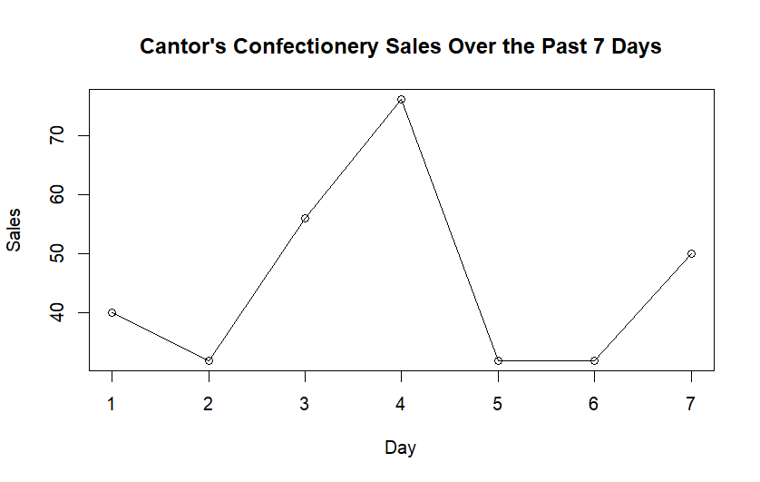
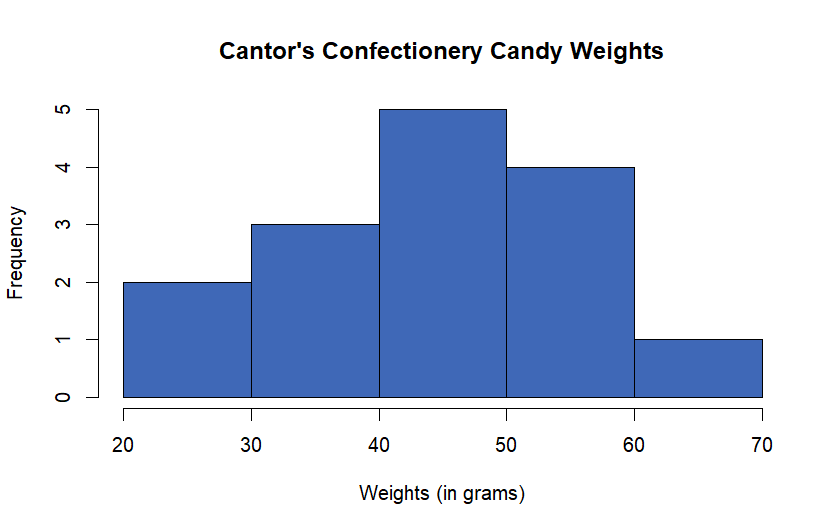
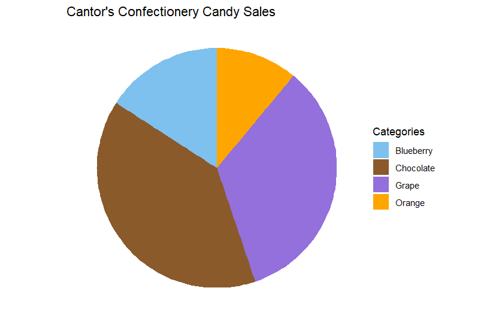
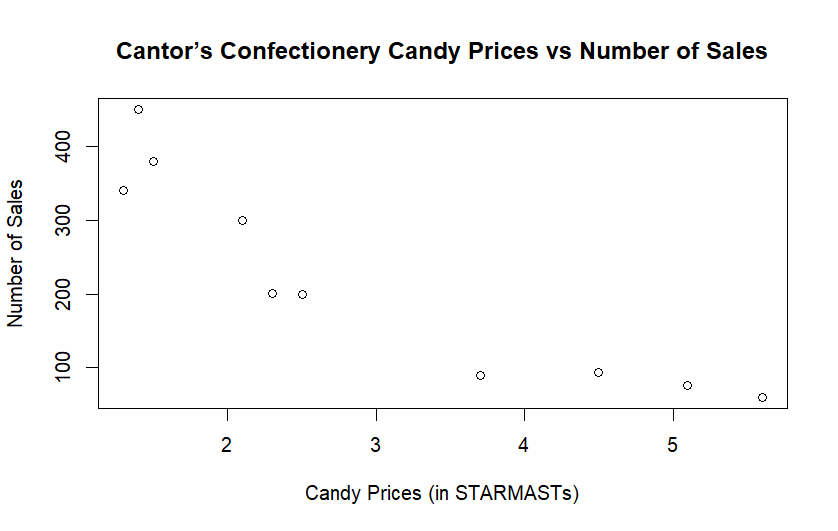
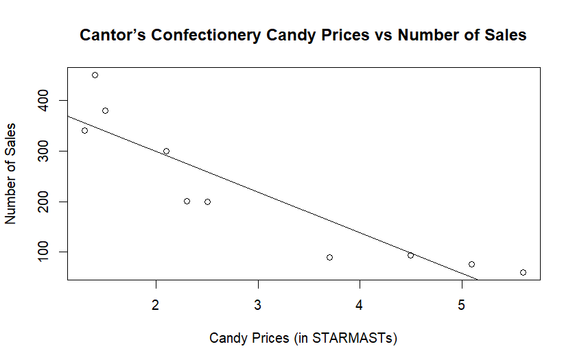

Introduction to data analysis
What is data analysis?
From sports to shopping, data is now underpinning everything people do. This prompts the need to learn data analysis, which is the process of inspecting and transforming data in order to extract useful insights.
This guide introduces you to data analysis. First, a distinction will be made between descriptive statistics and inferential statistics. Then on the descriptive statistics side, you will learn about measures of central tendency and dispersion, alongside data visualization. On the other hand, the inferential statistics section will include hypothesis testing, statistical relationships, and confidence intervals. It will also cover PMFs, PDFs, and CDFs.
What do you want to do?
If you want to summarize or describe a set of data, then you need techniques from descriptive statistics. For example, what is the “middle value” of the data, how spread out is the data, and what does the data look like in visual form? There are several techniques you can use to answer such questions, which will be explored further in this guide.
Before explaining inferential statistics, it is useful to establish what a sample and population is. A population is the totality of a group you want to study. Unfortunately, a population often contains too many individuals, so it is often inconvenient or sometimes even impossible to study every individual. Because of this, a sample, or a smaller subset of a population, is commonly taken for a statistical study.
Do you want to use these samples to make inferences and predictions about the population? If so, techniques from inferential statistics can help you. This can be done by testing whether the values of two data samples are significantly different, examining whether two variables have a statistically significant relationship, and more that is beyond the scope of this study guide.
Descriptive statistics
Central tendency
Central tendency, often called the average, is the typical and middle value of a data set. The three most common measures of central tendency are mean, median, and mode.
Mean
The mean is the sum of all values in the data set divided by the number of values in the data set.
The mean can be denoted by two symbols, depending on whether the data used is a sample or the whole population:
\(\overline{x}\) = sample mean
\(\mu\) = population mean
Many examples in this guide will use a very similar data set to each other, to show you that many different things can be done with even a single data set.
Cantor’s Confectionery recorded a sample of the number of candies it had sold for the past 7 days. This can be summarized by the following list: \(\{44,32,56,76,32,32,50\}\).
\[\overline{x} = \frac{44+32+56+76+32+32+50}{7} = 46\]
Median
The median is the middle value in a data set.
To find the median, the data set must first be arranged in numerical order.
If the data set has an odd number of values, the median would be the value in the exact middle of the data set.
If the data set has an even number of values, the median would be the sum of the two values in the middle of the data set, divided by two.
Cantor’s Confectionery recorded a sample of the number of candies it had sold for the past 7 days. This can be summarized by the following list: \(\{44,32,56,76,32,32,50\}\).
You can first order the list: \(\{32,32,32,44,50,56,76\}\).
Notice that the list contains 7 elements, which is an odd number. So to find the middle element, you can divide the number of elements by 2 and round it up. In this case, \(\frac{7}{2} = 3.5\), which rounds up to \(4\).
The fourth element in the set, which is also the median, is 44.
Cantor’s Confectionery recorded a sample of the number of candies it had sold for the past 6 days. This can be summarized by the following list: \(\{44,32,56,76,32,32\}\).
You can first order the list: \(\{32,32,32,44,56,76\}\).
Notice that the list contains 6 elements, which is an even number. So to find the two middle elements, you can divide the number of elements by 2. In this case, \(\frac{6}{2} = 3\). Then the two middle elements would be the third and fourth elements.
The third element is 32, whereas the fourth element is 44. To find the median, you can sum these elements together and divide them by 2. So the median is \(\frac{32+44}{2}=38\).
Mode
The mode is the value that most frequently occurs in the data set.
Cantor’s Confectionery recorded a sample of the number of candies it had sold for the past 7 days. This can be summarized by the following list: \(\{44,32,56,76,32,32,56\}\).
To find the mode, you can count how many times each unique value occurs in the data set. Here is a frequency table demonstrating that:
| Unique Value | Frequency |
|---|---|
| 32 | 3 |
| 44 | 1 |
| 56 | 2 |
| 76 | 1 |
Since 32 is the value that occurs in the data set for the highest number of times, it is the mode.
Why does this matter?
Calculating the central tendency can be important when you want to have a value that summarizes the whole data set, especially when you are making quick comparisons between two data sets. However, restricting yourself to finding only one measure of central tendency can lead to a misrepresentation of the data set.
For example, the mean itself can be unreliable because it risks being influenced by outliers, which are extreme values in the data set. If there exist extremely large values in the data set, the mean might be “pulled” higher than the actual centre of the data. Similarly, if there exist extremely small values in the data set, the mean might be “pulled” lower than the actual centre of the data. This is where comparing the mean to the mode and median would come in handy; if the mean differs greatly from the other measures of central tendency, this might indicate the presence of an outlier!
There are also cases where finding the median and mode alone might be unhelpful. In some data sets, there might not be any repeating values, so there is no point in attempting to find a mode. Other data sets may have unevenly weighted sampling. For instance, in a data set like \(\{1,1,1,50,100\}\), the median of this data set would be 1, but it would be unintuitive to say that it accurately captures the centre of the data.
Dispersion
The dispersion of a data set, also known as its spread or variability, refers to how scattered the data points are around the average. Four common measures of dispersion are range, interquartile range, standard deviation, and variance.
Range
The range is the difference between the maximum (highest value) and minimum (lowest value) of a data set.
Cantor’s Confectionery recorded a sample of the number of candies it had sold for the past 7 days. This can be summarized by the following list: \(\{44,32,56,76,32,32,50\}\).
You can first find the highest and lowest values from the list. The maximum is 76, whereas the minimum is 32.
To find the difference between these two values, you can subtract the maximum by the minimum. From this, the range is \(76 - 32 = 44\).
Interquartile range
The interquartile range (often shortened to IQR) is the difference between the upper quartile and lower quartile of a data set.
The upper quartile is the median of the data set’s upper half.
The lower quartile is the median of the data set’s lower half.
In other words, it measures the dispersion of the middle 50% of the data set.
Cantor’s Confectionery recorded a sample of the number of candies it had sold for the past 7 days. This can be summarized by the following list: \(\{44,32,56,76,32,32,50\}\).
You can first order the list: \(\{32,32,32,44,50,56,76\}\). Then you can split the list into two subsets: the upper half and the lower half. Since 40 is the value in the exact middle, it will not be included in the subsets.
After splitting, the two subsets are \(\{32,32,32\}\) and \(\{50,56,76\}\). The medians of these subsets, respectively, are 32 and 56.
To find the difference between these two values, you can subtract the upper quartile by the lower quartile. From this, the interquartile range is \(56-32=24\).
Cantor’s Confectionery recorded a sample of the number of candies it had sold for the past 6 days. This can be summarized by the following list: \(\{40,32,56,76,32,32\}\).
You can first order the list: \(\{32,32,32,40,56,76\}\). Then you can split the list into two subsets: the upper half and the lower half.
After splitting, the two subsets are \(\{32,32,32\}\) and \(\{40,56,76\}\). The medians of these subsets, respectively, are 32 and 56.
To find the difference between these two values, you can subtract the upper quartile by the lower quartile. From this, the interquartile range is \(56-32=24\).
Standard deviation and variance
Variance is the average squared distance from the mean, while the standard deviation is the square root of the variance. Different notations and formulas are used for standard deviations and variances of a sample versus a population.
| Standard deviation | Variance | Notes | |
|---|---|---|---|
| Population | \(\sigma = \sqrt{\frac{\sum(x_i - \mu)^2}{N}}\) | \(\sigma^2 = \frac{\sum(x_i - \mu)^2}{N}\) | \(\mu\) is the population mean, and \(N\) is the size of the population |
| Sample | \(s= \sqrt{\frac{\sum(x_i - \overline{x})^2}{n-1}}\) | \(s= \frac{\sum(x_i - \overline{x})^2}{n-1}\) | \(\overline{x}\) is the population mean, and \(n\) is the size of the sample |
Cantor’s Confectionery recorded a sample of the number of candies it had sold for the past 7 days. This can be summarized by the following list: \(\{40,32,56,76,32,32,50\}\).
To find the variance, you can begin by finding the sample mean \(\overline{x}\). In Example 1, you have already calculated that \(\overline{x} \approx 38.4\).
Then you can calculate the squared difference of each value from the sample mean \((x_i - \overline{x})\):
\((40-38.4)^2=2.56\)
\((32-38.4)^2=40.96\)
\((56-38.4)^2=309.76\)
\((76-38.4)^2=1413.76\)
\((32-38.4)^2=40.96\)
\((32-38.4)^2=40.96\)
\((50-38.4)^2=134.56\)
To find \(\sum(x_i - \overline{x})\), you can sum all the squared differences above. \[\sum(x_i - \overline{x})=2.56+40.96+309.76+1413.76+40.96+40.96+134.56=1983.52\] Finally, because the variance is \(\frac{\sum(x_i - \overline{x})^2}{n-1}\), you can divide the newly calculated \(\sum(x_i - \overline{x})\) by \(n-1\). Since the sales were recorded over 7 days, \(n = 7\). As such, \(n-1=7-1=6\). Putting this all together, \[s^2=\frac{1983.52}{6}\approx330.6\] If you want to find the standard deviation, you can recall that the standard deviation is the square root of the variance. So, calculating the standard deviation, \[s=\sqrt{330.6}\approx18.2\]
For more information on standard deviation and variance, please read Guide: Expected value, variance, standard deviation.
Why does this matter?
Measures of dispersion are useful for getting a general overview of how spread out a data set is, which again can be used for quick comparisons between multiple data sets. These measures become much more important later on when you dive into inferential statistics. For example, certain statistical tests involve comparing between multiple data sets, and to ensure reliable test results, the variances must remain similar across all the data sets being compared.
Similarly to the mean, the variance and standard deviation are influenced by outliers, possibly causing the value to drastically increase. As such, finding the interquartile range can be especially useful; because it measures the spread in the middle 50% of the data set, it will not be affected by outliers.
Data visualization
Data visualization involves representing data in a visual way, often highlighting patterns and outliers that would not have been visible in the raw data set. This study guide will cover five common data visualization types: bar charts, line graphs, histograms, pie charts, and scatter plots.
Bar charts
Bar charts use rectangular bars to represent data, making it useful for comparing data across multiple categories.
Cantor’s Confectionery recorded a sample of the number of candies it had sold across different categories in the past week:
23 blueberry candies
49 grape candies
57 chocolate candies
16 orange candies
An employee wanted to quickly compare candy sales across different categories, so they decided to plot this data in the form of a bar chart:

cat <- c(“Blueberry”,“Grape”,“Chocolate”,“Orange”)
barplot(num, names.arg = cat, xlab =“Category”, ylab =“Number of Sales”, main =“Cantor’s Confectionery Candy Sales”, density=c(5,10,20,30) , angle=c(0,45,90,11) )
Note that bar charts do not have to be vertical. Bar charts are usually made to be vertical by default, but sometimes a horizontal format might be useful so that long label names do not overlap with each other.
Line graphs
Line graphs represent data values as a series of points on a graph, which are connected by line segments. This is useful for identifying trends and tracking changes across the x-axis (typically over time).
Cantor’s Confectionery recorded a sample of the number of candies it had sold for the past 7 days. This can be summarized by the following list: \(\{40,32,56,76,32,32,50\}\).
An employee wanted to see how the sales fluctuated over time, so they decided to plot this data in the form of a line graph:

sales <- c(40,32,56,76,32,32,50) plot(sales, type = “o”, xlab = “Day”, ylab = “Sales”, main = “Cantor’s Confectionery Sales Over the Past 7 Days”)
The number of sales do not appear to consistently increase or decrease, but the sales appear to peak on day 4, which may be worthy of further investigation.
Histograms
Histograms represent data in the form of bars stretching across a particular range of values. This is useful for visualizing the distribution of continuous data.
Cantor’s Confectionery recorded the weights of their candies in the form of a frequency table:
| Candy weights (in grams) | Frequency |
|---|---|
| \(20 < x \le 30\) | 2 |
| \(30 < x \le 40\) | 3 |
| \(40 < x \le 50\) | 5 |
| \(50 < x \le 60\) | 4 |
| \(60 < x \le 70\) | 1 |
An employee wanted to see how the weights data was distributed (in other words, the “shape” of the data), so they decided to plot this data in the form of a histogram:

num <- c(21,21,31,31,31,41,41,41,41,41,51,51,51,51,61)
hist(num,col=‘#3F68B7’,xlab=“Weights (in grams)”, main=“Cantor’s Confectionery Candy Weights”)
While it is difficult to tell with such a small sample size, the weights data appears to be approximately normally distributed. This is because the data is symmetrical and forms a “bell shape” when plotted.
Pie charts
Pie charts illustrate data as sections of a circle or “slices of a pie”, with each section representing a different category. This is useful for examining the relationship between different categories of data with the whole data set.
Cantor’s Confectionery recorded a sample of the number of candies it had sold across different categories in the past week:
23 blueberry candies
49 grape candies
57 chocolate candies
16 orange candies
An employee wanted to visualize how each category compares to the whole and decided to plot this data in the form of a pie chart:

library(ggplot2)
df <- data.frame ( num = c(23,49,57,16), cat = c(“Blueberry”,“Grape”,“Chocolate”,“Orange”) )
ggplot(data=df, aes(x=““, y=num,fill=cat))+ labs(y=”Number of Sales”,fill=“Categories”,title=“Cantor’s Confectionery Candy Sales”)+ geom_bar(stat=“identity”) + coord_polar(“y”) + theme_void() + scale_fill_manual(values=c(“skyblue2”, “tan4”, “mediumpurple”, “orange”))
As you can see, chocolate takes up most of the pie chart, followed by grape, blueberry, and orange.
Scatter plots
Scatter plots represent data in the form of points scattered in a graph, which is useful for identifying potential relationships between two variables. Moreover, scatter plots are often used in regression, which is covered in a later section in this guide.
Cantor’s Confectionery recorded the data of candy prices, alongside each candy’s number of sales. (This confectionery exclusively accepts a cryptocurrency named STARMASTs).
The data is shown in the table below:
| Candy Prices (in STARMASTs) | 1.3 | 1.4 | 1.5 | 2.1 | 2.3 | 2.5 | 3.7 | 4.5 | 5.1 | 5.6 |
| Number of Sales | 340 | 450 | 380 | 300 | 201 | 199 | 89 | 93 | 76 | 60 |
An employee wanted to see, at a glance, whether there was any correlation between candy prices and number of sales. They decided to plot this data in the form of a scatter plot:

price <- c(1.3,1.4,1.5,2.1,2.3,2.5,3.7,4.5,5.1,5.6) sales <- c(340,450,380,300,201,199,89,93,76,60)
plot(price,sales,xlab=“Candy Prices (in STARMASTs)”,ylab=“Number of Sales”,main=“Cantor’s Confectionery Candy Prices vs Number of Sales”)
From this scatter plot, there appears to be an inverse trend: when the candy price increases, the number of sales decreases.
Inferential statistics
The bridge between descriptive and inferential statistics is distributions. This refers to the “shape” of the data, or how the data points are spread out. Some common distributions include the normal distribution (as mentioned in the histogram section), binomial distribution, and Poisson distribution. For more information on common distributions, please read Overview: Probability distributions.
If you know which distribution best describes your data, you would know what kind of inferential statistics techniques to use. For example, the PMFs, PDFs, or CDFs differ depending on the distribution you are working with, and the confidence interval formula that you will see below only works for normally distributed data.
Hypothesis testing
Hypothesis tests help you to use data from a sample to test whether or not it is reasonable to believe a certain statistical characteristic is true for a whole population. A hypothesis test involves two hypotheses:
Null hypothesis (\(H_0\)): This hypothesis represents the ‘status quo’ or no effect. It is always a statement of equality.
Alternative hypothesis (\(H_1\)): This is the hypothesis that you are trying to test. It is always a statement of inequality.
This hypothesis test will provide a p-value: the probability of obtaining a test result as extreme as the observed outcome if the null hypothesis is true. So the lower the p-value is, the more statistical evidence there is against the null hypothesis.
Before conducting the test, you should set a significance level, which is the level of certainty you want to test your hypothesis with. A commonly used significance level is 5% or 0.05. In the case of a 5% significance level, if you conduct a hypothesis test with under a 5% chance of obtaining the outcome if the null hypothesis is true, then you would consider it sufficient evidence to reject the null hypothesis.
Cantor’s Confectionery has a candy machine that is supposed to produce 20 candies per bag. An employee suspects that the machine might be putting significantly more or less candies per bag than originally intended. With \(\mu\) representing the population mean of candies per bag,
\(H_0:\mu=20\)
\(H_1: \mu \neq 20\)
To test if the machine is working as it should be, the employee uses a two-tailed t-test with a significance level of 5%. The employee then compares the data set of candies per bag with a mean of 20 and obtains a high p-value > 0.05.
This indicates that there is insufficient evidence for a statistically significant difference between the expected mean and the actual mean, so the candy machine is likely working as intended.
Cantor’s Confectionery has conducted a marketing campaign and wants to test whether their sales have significantly increased after the marketing campaign. Let \(\mu_1\) be the population mean of sales before the marketing campaign, and \(\mu_2\) be the population mean of sales after the marketing campaign.
\(H_0:\mu_1=\mu_2\)
\(H_1: \mu_1 < \mu_2\)
To test this, they conducted a two-tailed two-sample t-test, with a significance level of 5%, between the sales data set before their campaign versus the sales data set after their campaign. From this test, they obtained a low p-value < 0.05.
This indicates that there is sufficient evidence to suggest a statistically significant difference between the number of sales before and after the campaign, specifically with the number of sales increasing after the campaign was implemented.
Many hypothesis tests rely on certain assumptions. For instance, the t-test assumes that the sample being used comes from a normally distributed population.
When your data set fails to meet the assumptions of a particular hypothesis test, there may exist other methods that you can use instead, like non-parametric tests. However, this material goes beyond the scope of this study guide.
For more information on hypothesis testing, please read Guide: Introduction to hypothesis testing.
Correlation tests and regression analysis
A correlation test is a type of hypothesis test that determines whether the relationship between two or more variables is statistically significant. In testing for a linear relationship between two variables, the Pearson correlation coefficient (often denoted by \(r\)) is often used.
The value of this coefficient, which ranges from -1 to 1, indicates the strength and direction of the relationship between the variables. There are two possible directions for the relationship:
Positive: when the value of one variable increases, the value of the other variable increases.
Negative: when the value of one variable increases, the value of the other variable decreases.
While there are some gray areas, the value of the Pearson correlation coefficient is approximately interpreted in this way:
| Value | Interpretation |
|---|---|
| 0.80 to 1.00 | Very strong positive correlation |
| 0.60 to 0.79 | Strong positive correlation |
| 0.40 to 0.59 | Moderate positive correlation |
| 0.20 to 0.39 | Weak positive correlation |
| 0.00 to 0.19 | Very weak positive correlation |
| -0.19 to 0.00 | Very weak negative correlation |
| -0.39 to -0.20 | Weak negative correlation |
| -0.59 to -0.40 | Moderate negative correlation |
| -0.79 to -0.60 | Strong negative correlation |
| -0.80 to -1.00 | Very strong negative correlation |
On the other hand, regression analysis uses a function to model the relationship between two or more variables. This would involve a dependent variable and one or more independent variables. To provide some reasoning for the naming, the dependent variable is the output of the regression function, so it is dependent on the values of any independent variables that are input into the function. So a regression model would allow you to predict the value of the dependent variable based on the value of the independent variable(s).
Regression analysis sometimes, but not always, deals with the linear relationship between two variables (one dependent variable and one independent variable). This would be known as simple linear regression, where the relationship is modeled as a linear function in the form of \(y = \alpha x+\beta\). The coefficient of determination (\(R^2\) or \(r^2\)) indicates how well the model’s independent variable explains the dependent variable, and the value of this ranges from 0 to 1. In simple linear regression specifically, the coefficient of determination is the squared value of the Pearson correlation coefficient.
An employee from Cantor’s Confectionery wishes to test if there is a statistically significant linear relationship between candy prices (independent variable) and number of sales (dependent variable), using the same data as Example 13. They decide to use simple linear regression for this purpose. This can be visualized below as a line of best fit overlaid on the scatter plot:

price <- c(1.3,1.4,1.5,2.1,2.3,2.5,3.7,4.5,5.1,5.6) sales <- c(340,450,380,300,201,199,89,93,76,60)
plot(price,sales,xlab=“Candy Prices (in STARMASTs)”,ylab=“Number of Sales”,main=“Cantor’s Confectionery Candy Prices vs Number of Sales”) abline(lm(sales ~ price))
This can be modeled as the linear function \(\textrm{sales}=-80.35(\textrm{price}) + 459.84\). The model’s coefficient of determination is 0.8319, indicating that the price explains the number of sales well.
A Pearson correlation test indicated that the Pearson correlation coefficient is approximately -0.9121. This indicates a very strong negative relationship between the two variables. You can notice, also, that the coefficient of determination is the squared value of the Pearson correlation coefficient, as \((-0.9121)^2\approx0.8319\).
Correlation does not equal causation. For example, although candy prices and number of sales are strongly correlated, this does not necessarily show that one causes the other.
A classic example is that there is a positive correlation between the number of ice cream sales and crime rates. Even so, it is likely not the case that ice cream sales cause crime rates to rise, or crime rates cause ice cream sales to increase. Rather, it is much more likely that there is a third variable (namely, the hot weather) that causes both ice cream sales and crime rates to increase!
It is important to note that 10 data points makes up quite a small sample size, and that a bigger sample size might lead to a more accurate regression model!
For more information on regression, please read [Guide: Introduction to regression.]
PMFs, PDFs, and CDFs
A probability mass function (PMF) is used for discrete random variables. It returns the probability that a discrete random variable \(X\) will take on a specific countable value \(x\). So it can be expressed as \(\mathbb{P}(X=x)\).
Cantor’s Confectionery knows that the rate of customers entering the shop per hour can be modeled as \(X \sim \textrm{Pois}(20)\).
An employee wants to find the probability of exactly 15 customers entering the shop in an hour. To find this, the employee could use a PMF, which can be represented as \(\mathbb{P}(X=15)\), approximately resulting in a probability of 0.052.
A probability mass function (PDF) is used for continuous random variables. It returns the probability that a continuous random variable \(X\) will take on a value that lies between a certain interval. So it can be expressed as \(\mathbb{P}(a \leq X \leq b)\), where \(a\) is the lower bound of the interval and \(b\) is the upper bound of the interval.
Cantor’s Confectionery knows that the lengths of their chocolate bars are normally distributed and can be modeled as \(X \sim N(5.6,1.44)\).
An employee wants to find the probability that a chocolate bar has a length between 3 to 5 inches. To find this, the employee could use a PDF, which can be represented as \(\mathbb{P}(3 \le X\le5)\), approximately resulting in a probability of 0.29.
A cumulative distribution function (CDF) is used for both discrete and continuous random variables. It returns the probability that a random variable \(X\) will take on a value that is less than or equal to a particular value \(x\). So it can be expressed as \(\mathbb{P}(X \leq x)\).
Cantor’s Confectionery knows that the rate of customers entering the shop per hour can be modeled as \(X \sim \textrm{Pois}(20)\).
An employee wants to find the probability of less than or equal to 15 customers entering the shop in an hour. To find this, the employee could use a PMF, which can be represented as \(\mathbb{P}(X=15)\), approximately resulting in a probability of 0.16.
Cantor’s Confectionery knows that the lengths of their chocolate bars are normally distributed and can be modeled as \(X \sim N(5.6,1.44)\).
An employee wants to find the probability that a chocolate bar has a length less than or equal to 5 inches. To find this, the employee could use a CDF, which can be represented as \(\mathbb{P}(X\le5)\), approximately resulting in a probability of 0.31.
For continuous distributions, \(\mathbb{P}(X=x)=0\), so \(\mathbb{P}(X \le x) = \mathbb{P}(X<x)\).
In some cases, you might want to find the probability that a random variable \(X\) will take on a value that is greater than or equal to a particular value \(x\). In other words, you want to find \(\mathbb{P}(X\ge x)\). Since 1 represents the total probability of all outcomes, you can subtract the CDF result from 1 to get the desired result.
For continuous distributions, recall that \(\mathbb{P}(X=x)=0\), so:
\[ \mathbb{P}(X\ge x)=1-\mathbb{P}(X< x)=1-\mathbb{P}(X\le x) \]
For discrete distributions \(\mathbb{P}(X \le x)-\mathbb{P}(X=x)=\mathbb{P}(X\le x-1)\), so:
\[ \mathbb{P}(X\ge x)=1-\mathbb{P}(X< x)=1-(\mathbb{P}(X \le x)-\mathbb{P}(X=x))=1-\mathbb{P}(X\le x-1) \]
For more information on PMFs, PDFs, and CDFs, please read Guide: PMFs, PDFs, and CDFs.
Confidence intervals
A confidence interval consists of an upper bound and lower bound used to estimate a population parameter (such as the population mean) within a certain probability. For example, a 95% confidence interval implies that if the sampling process were repeated 100 times, then 95 of the intervals calculated from those samples would contain the true population parameter.
While the confidence interval formula differs depending on the distribution, here is the commonly used confidence interval formula for normally distributed data: \[\textrm{CI}=\overline{x}\pm z\frac{s}{\sqrt{n}}\]
\(\overline{x}\) = sample mean
\(z\) = z-score or confidence level value
\(s\) = sample standard deviation
\(n\) = sample size
Cantor’s Confectionery recorded a sample of the number of candies it had sold for the past 7 days. This can be summarized by the following list: \(\{40,32,56,76,32,32,50\}\).
You want to calculate a 95% confidence interval for the population mean (the mean of all Cantor’s Confectionery sales per day). To do this, you would need to find the sample mean \(\overline{x}\), z-score, sample standard deviation \(s\), and sample size \(n\).
In Example 1, you have already calculated that \(\overline{x} \approx 38.4\). In Example 8, you have also calculated that \(n=7\) and \(s\approx18.2\). Now you must find the z-score. By using a z-table, you would be able to find that the z-score for a confidence level of 95% is 1.96.
So, the 95% confidence interval for the population mean is:
\[\textrm{CI}=38.4\pm 1.96\frac{18.2}{\sqrt{7}}\] The upper bound is \(38.4+ 1.96\frac{18.2}{\sqrt{7}}\approx51.9\), and the lower bound is \(38.4- 1.96\frac{18.2}{\sqrt{7}}\approx24.9\).
For more information on regression, please read [Guide: Introduction to confidence intervals.]
Quick check problems
- What is the median of this data set? \(\{3,1,2,4,4\}\)
Answer: The median of this data set is .
- What is the range of this data set? \(\{16,7,900,4,3\}\).
Answer: The range of this data set is .
- A student wants to visualize their budget, seeing how the percentage of each spending category compares to the whole budget. What type of data visualization would suit this best?
Answer: The type of data visualization that would suit this best is .
- You are given three statements below. Decide whether they are true or false.
For discrete distributions, \(\mathbb{P}(X\ge x)=1-\mathbb{P}(X\le x)\). Answer: .
The smaller the sample size, the likelier it will be that the regression model is accurate. Answer: .
A significant difference between the mean and median can indicate the presence of an outlier. Answer: .
Further reading
For more questions on the subject, please go to Questions: Introduction to probability.
Version history
v1.0: initial version created 9/25 by Michelle Arnetta as part of a University of St Andrews VIP project.
This work is licensed under CC BY-NC-SA 4.0. :::::::::::: :::::::